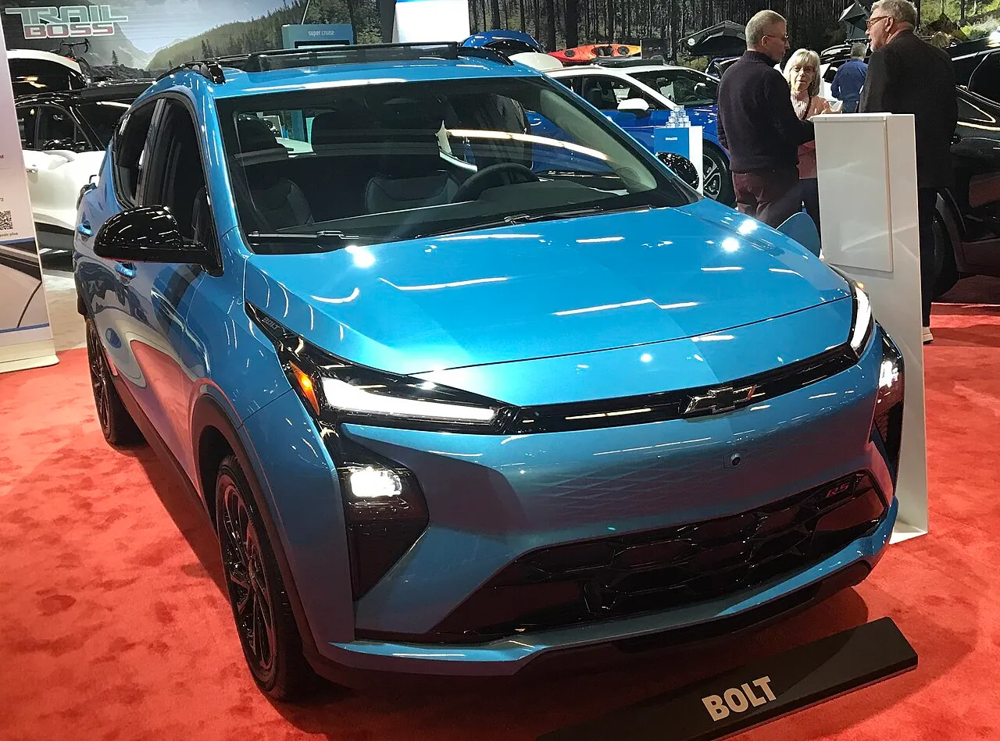
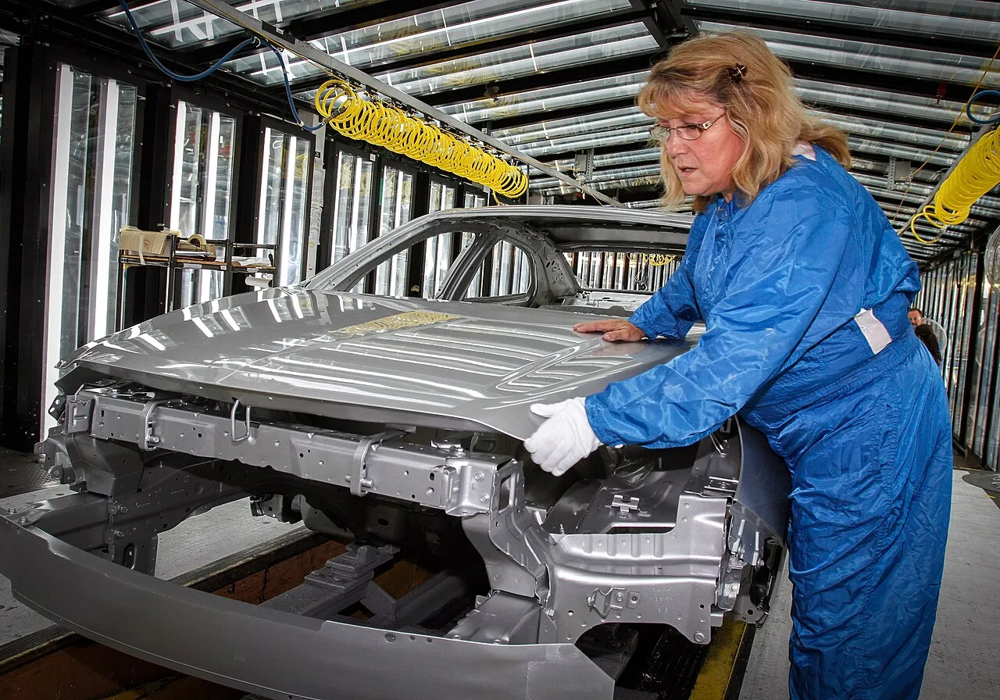
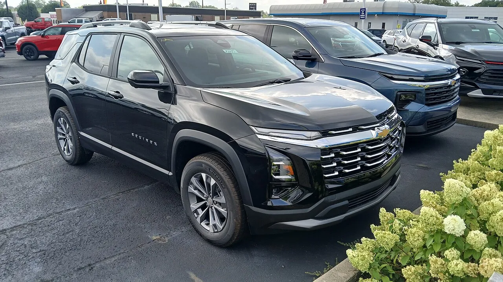
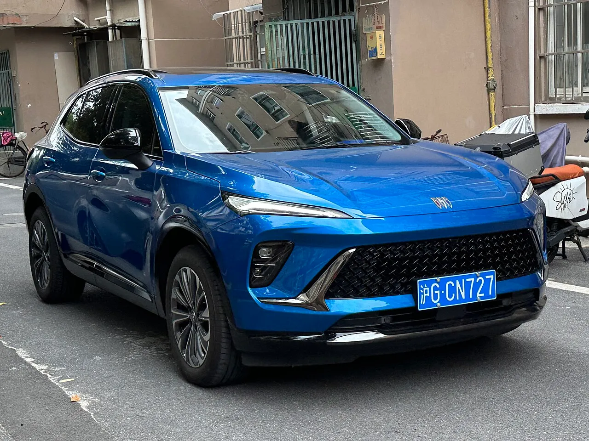
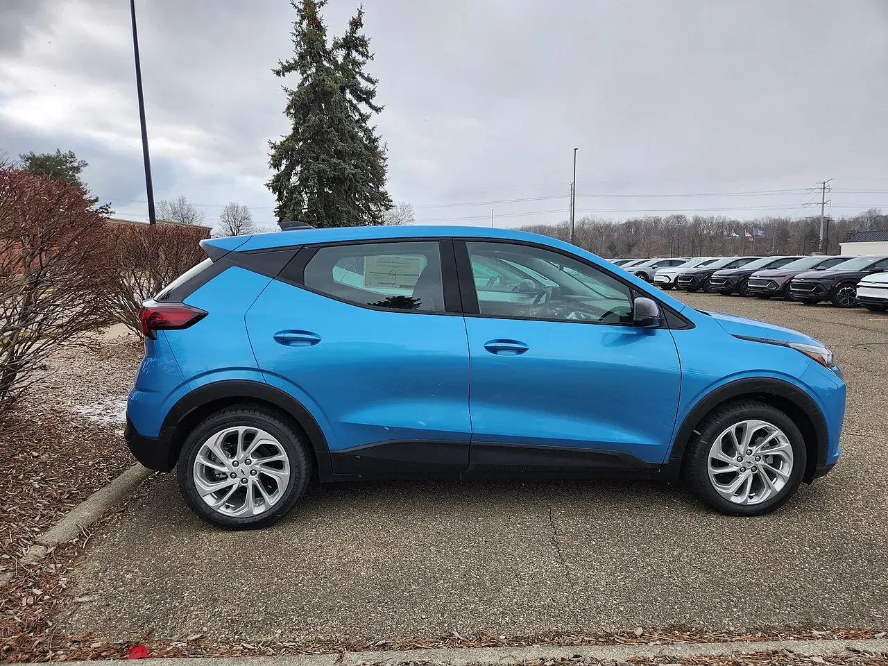
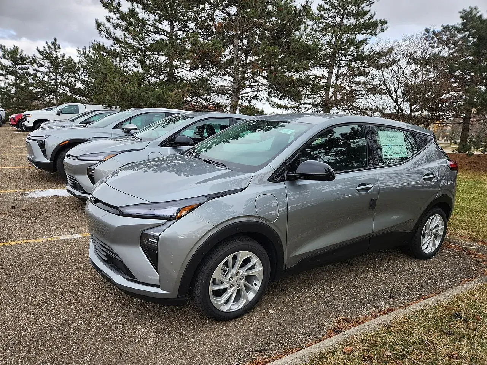
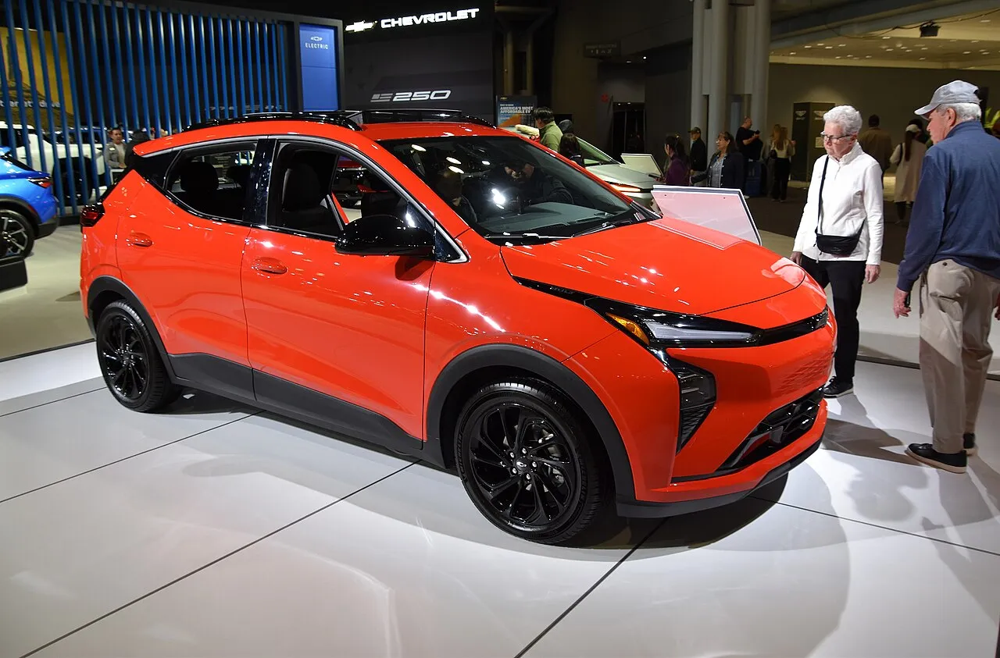

▲ 2027 쉐보레 볼트. 미국 판매 가격이 2만 7,600달러부터 시작하는 2세대 모델이다 ⓒ DontCallMeLateForDinner, Wikimedia Commons (CC BY-SA 4.0)
"부활 1년 만에 또 단종." 쉐보레 볼트 이야기다. 로이터와 전미자동차노조(UAW) 지부장 발언을 인용한 외신 보도에 따르면 GM은 미국 캔자스주 페어팩스 공장에서 만드는 2세대 볼트의 생산 규모를 당초 약 15만 대에서 약 3만 5,000대로 75%가량 줄였고, 2027년 1분기에 생산을 끝낼 전망이다(오토헤럴드·재럴닉·오토모티브월드). 다만 이 숫자는 GM이 발표한 것이 아니라 현지 노조가 현재 일일 생산량을 기준으로 추정한 값이다. GM은 구체적 수치를 밝히지 않고 "시장 상황과 고객 수요를 지속적으로 평가하고 있다"고만 했다.
이 글은 '75%가 무엇에 대한 감축인지'부터 원문 기준으로 확인하고, 공장이 무엇으로 바뀌는지, 볼트가 왜 안 팔렸는지, 한국에는 어떤 영향이 있는지를 정리했다.

▲ 2026년 1월 몬트리올 국제오토쇼에 전시된 2027 쉐보레 볼트. 뒤쪽에서 관람객이 다른 차를 살펴보고 있다 ⓒ Bull-Doser, Wikimedia Commons (Public domain)
1. '75% 감축'은 무엇에 대한 숫자인가
가장 먼저 짚을 것은 기준이다. 국내외 보도는 같은 숫자를 전하지만, 일부 요약문에서 "5만 대에서 3만 5,000대"로 적힌 경우가 있다. 이 경우 감축률은 30%에 불과해 75%와 맞지 않는다. 오토헤럴드·재럴닉·오토모티브월드·모터일러스트레이티드가 공통으로 전한 기준은 약 15만 대 → 약 3만 5,000대다. 35,000을 150,000으로 나누면 약 23%이므로 감축폭은 약 77%, 보도는 이를 '약 75%'로 부른다.
| 항목 | 내용 | 출처·메모 |
|---|---|---|
| 당초 계획 | 약 15만 대 | 오토헤럴드는 "올해 약 15만 대로 예상됐던 전체 생산 규모"로 적었다. 계획 기간의 정확한 정의는 확인하지 못했다 |
| 현재 전망 | 약 3만 5,000대 | 종료 시점(2027년 1분기)까지의 누적 규모 |
| 감축률 | 약 75% | 계산상 약 77%. 보도의 표현은 "75%가량" |
| 산정 근거 | "현재 공장 일일 생산량 기준" | UAW 지부장 던테이 윌슨의 추정(오토모티브월드). GM 공식 데이터가 아님 |
| GM 입장 | 구체 수치 언급 없음 | "시장 상황과 고객 수요를 지속적으로 평가하고 있다" |
| 생산 종료 | 2027년 1분기 | 외신 보도 기준. 모터일러스트레이티드는 다른 보도에서 2028 모델연도까지 갈 수 있다는 언급도 있다고 전했다 |
✔ 확인하지 못한 부분
일렉트리브(electrive)는 당초 계획을 5만 대로 표기해 매체 간 기준이 엇갈린다. 이 글의 기준은 "15만 → 3만 5,000"이며, "5만 → 3만 5,000"은 30% 감축이라 75% 감축과 산술적으로 맞지 않아 채택하지 않았다. 당초 계획 기간도 매체별로 연간·올해·2027 생산으로 표현이 다르다. 또 3만 5,000대라는 숫자는 노조 추정치이고 GM의 공식 확정치가 아니다.
2. 페어팩스 공장은 무엇으로 바뀌나
볼트 라인이 비워진 뒤 페어팩스 공장에는 내연기관 차가 들어온다. 지엠오소리티(GM Authority)가 1월 보도에서 전한 일정에 따르면 멕시코에서 만들던 쉐보레 이쿼녹스(내연기관)가 2027년 중반 이곳으로 옮겨오고, 지금 중국에서 만드는 뷰익 엔비전의 차세대 모델이 2028년부터 생산된다. 일렉트리브와 오토모티브월드도 같은 방향으로 전했다. GM은 당시 "이 결정은 GM의 미국 내 제조 기반을 강화하고 미국 일자리를 뒷받침한다"고 밝혔다.
| 시기 | 내용 | 출처 |
|---|---|---|
| 2025년 하반기~2026년 초 | 2세대 볼트 생산 시작(1교대) | 지엠오소리티·일렉트리브 |
| 2027년 1분기 | 볼트 생산 종료 전망 | 오토헤럴드·일렉트리브 |
| 2027년 중반 | 내연기관 쉐보레 이쿼녹스, 멕시코에서 이전 | 지엠오소리티 |
| 2028년~ | 차세대 뷰익 엔비전(현재 중국 생산) 생산 | 지엠오소리티 |
| 시기 미정 | GM이 약속한 "차세대 저가 전기차" | 지엠오소리티, 구체 내용은 알려지지 않음 |
고용 영향도 있다. 노조 지부장은 공장에서 약 1,000명이 무기한 일시해고 상태이고, 재개하려던 2교대 가동이 늦춰졌다고 밝혔다(일렉트리브·오토모티브월드). 볼트가 팔리지 않으면서 교대조 확대 계획 자체가 흔들린 셈이다.

▲ 페어팩스 조립공장 작업 장면. GM 제공 사진으로, 촬영 시점과 생산 차종은 확인하지 못했다 ⓒ General Motors, Wikimedia Commons (CC BY 3.0)

▲ 2027년 중반 페어팩스로 옮겨올 예정인 내연기관 쉐보레 이쿼녹스(2025년형) ⓒ Deathpallie325, Wikimedia Commons (CC BY 4.0)

▲ 현재 중국에서 만드는 뷰익 엔비전. 사진은 현행 중국 판매 모델이며 2028년 페어팩스에서 만들 차세대 모델이 아니다 ⓒ JustAnotherCarDesigner, Wikimedia Commons (CC0)
3. 한 번 죽었던 볼트는 어떻게 돌아왔나
1세대 볼트 EV와 볼트 EUV는 2023년 생산이 종료됐다(오토헤럴드). GM은 높은 고객 충성도와 합리적인 가격을 이유로 새 볼트를 다시 투입했고, 생산지를 캔자스주 페어팩스로 옮겨 배터리와 충전 시스템, 실내를 개선했다. 쉐보레 대변인은 지엠오소리티에 "10월에 공개했을 때 한정 생산 모델이라고 밝혔고, 강한 고객 수요 때문에 되살린다고 했다"고 설명했다. 즉 처음부터 오래 만들 차로 예고된 것이 아니었다는 점이 중요하다.
| 항목 | 내용 | 메모 |
|---|---|---|
| 시작 가격 | 2만 7,600달러(약 3,700만 원) | 오토헤럴드. GM 공식 보도자료(2025년 10월)는 목적지 비용 1,395달러를 포함한 2만 8,995달러(LT, 모델연도 후반 투입)로 표기했고, 이 값에서 목적지 비용을 빼면 2만 7,600달러가 된다. 초기 투입 LT는 2만 9,990달러(목적지 포함)였다 |
| 배터리 | 65kWh 리튬인산철(LFP) | 오토헤럴드 |
| 모터 | 싱글 모터 210마력, 최대토크 169lb-ft | 오토헤럴드 |
| 1회 충전 주행거리 | 262마일(약 422km, EPA) | GM 보도자료. 같은 보도자료의 다른 문안에는 "GM 추정 255마일(약 410km)", 10→80% 26분으로 적혀 있어 일렉트리브의 410km와 일치한다. EPA 수치가 나오기 전후의 표기 차이로 보이나 확정하지는 못했다. 지엠오소리티의 260마일은 반올림 표기다 |
| 급속충전 | 최대 150kW, 10→80% 약 25분 | GM 보도자료(EPA 문안 기준 25분, 앞선 문안은 26분) |
| 충전 포트·기능 | NACS 포트, 양방향 V2H | 오토헤럴드 |
| 생산지 | 미국 캔자스주 페어팩스 | 1세대는 2023년 생산 종료 |
3만 달러 아래 가격은 미국 전기차 시장에서 드문 구간이다. 쉐보레는 볼트를 "미국에서 가장 저렴한 전기차"로 내세운다(오토헤럴드). 150kW 급속충전은 가격대 대비 낮지 않은 수준이다(1세대와의 비교 수치는 출처를 확인하지 못해 뺐다). 가격과 사양만 보면 제품이 나빠서 접는 것이 아니다.

▲ 2027 쉐보레 볼트의 측면. 소형 CUV 형태의 해치백 차체다 ⓒ DontCallMeLateForDinner, Wikimedia Commons (CC BY-SA 4.0)
4. 왜 안 팔렸나 — 세액공제 폐지와 SUV 선호
오토헤럴드에 따르면 볼트는 올해 8월까지 미국에서 4,224대 팔리는 데 그쳤다. 로이터 기사를 전재한 매체는 "2026년 8월까지 미국에서 4,224대"로, 일렉트리브는 "8월 말까지"로 적어 기간이 일치한다. 오토모티브월드만 같은 숫자를 상반기 기준으로 적었는데, 나머지 세 곳과 어긋나므로 이 글은 '2026년 1~8월'을 따랐다. 로이터는 GM이 증권당국 제출 서류에서 차종별 생산량을 따로 공개하지 않아 노조 추정이 사실상 유일한 공개 수치라고 전했다.
원인으로는 세 가지가 거론된다. 첫째, 미국 정부가 2025년 9월 말 최대 7,500달러의 연방 전기차 세액공제를 폐지했다. 재럴닉은 원래 생산 계획이 이 공제가 사라지기 전에 짜였다고 전했다. 둘째, 소비자의 SUV 선호다. 셋째, GM의 전기차 전략 변화다(오토헤럴드). 지엠오소리티는 관세 정책과 완화된 연비 규제도 거론했다. GM이 2025년 2분기 이후 전기차 관련 손실로 109억 달러를 입었다는 보도도 있다(모터일러스트레이티드).
| 요인 | 내용 | 출처 |
|---|---|---|
| 보조금 종료 | 2025년 9월 말 최대 7,500달러 연방 세액공제 폐지 | 오토헤럴드·재럴닉 |
| 판매 부진 | 2026년 8월까지 4,224대 | 오토헤럴드·일렉트리브 |
| 소비 취향 | SUV 선호 | 오토헤럴드 |
| 정책 환경 | 관세, 완화된 연비 규제로 규제 대응용 전기차 필요성 감소 | 지엠오소리티 |
| 전략 변화 | 내연기관 쉐보레·뷰익 물량의 미국 내 생산 확대 | 일렉트리브·지엠오소리티 |
볼트가 사라진 뒤 쉐보레의 가장 저렴한 전기차는 이쿼녹스 EV(3만 6,795달러)가 된다고 재럴닉은 전했다. 같은 매체는 쉐보레가 2025년 이쿼녹스 EV를 약 5만 8,000대 팔았다고 소개했다. 값싼 소형차보다 중형 SUV 전기차가 더 팔린다는 신호지만, 이는 볼트의 감산 이유를 설명하는 한 가지 비교일 뿐 직접적인 인과를 증명하지는 않는다.

▲ 재고로 줄지어 선 신형 볼트. 2026년 미시간 주차장에서 촬영된 사진이다 ⓒ DontCallMeLateForDinner, Wikimedia Commons (CC BY-SA 4.0)
5. 배터리는 중국산 LFP였다 — 관세와 국내 공급망
볼트에는 LFP 배터리가 들어간다. 일렉트리브(2025년 8월)에 따르면 GM은 새 볼트에 중국 CATL의 LFP 배터리를 약 2년간 임시 수입하기로 했고, 미국에서 이를 대체할 LFP 셀은 GM·LG에너지솔루션 합작 얼티엄셀즈의 테네시 스프링힐 공장에서 2027년 말 상업 생산을 목표로 한다. 중국산 EV 배터리에는 부품 관세를 포함해 총 약 80%의 관세가 붙는다고 월스트리트저널을 인용해 전했다.
이 일정에서 눈여겨볼 점이 있다. 볼트 생산이 2027년 1분기에 끝난다면 스프링힐 LFP 셀이 상업 생산에 들어가는 2027년 말보다 먼저다. 따라서 볼트가 미국산 LFP 셀을 쓰는 단계까지 가지 못할 가능성이 있다. 다만 이는 두 일정을 겹쳐 본 추정이며, GM이 이렇게 밝힌 것은 아니다. 지엠오소리티가 전한 감산·종료 사유에도 배터리 문제는 들어 있지 않았다.
📍 이 사진들에 대해
이 글의 사진은 모두 Wikimedia Commons에 올라온 실차·공장 사진이다. 볼트 사진은 2027년형 일반 판매 차량과 전시 차량이며, 페어팩스 공장 사진은 촬영 시점을 확인하지 못했다.

▲ 모터쇼에 전시된 주황색 볼트 RS. 파일 설명에는 2026년형 RS로 표기돼 있다 ⓒ Charles from Port Chester, New York, Wikimedia Commons (CC0)
6. 한국에는 어떤 영향이 있나
결론부터 말하면 직접 영향은 확인되지 않는다. 이번 감산은 미국 페어팩스 공장 이야기이고, 한국GM의 생산 계획이 바뀐다는 보도는 찾지 못했다. 확인된 국내 맥락은 아래와 같다.
| 항목 | 확인 내용 | 출처 |
|---|---|---|
| 1세대 볼트 EV·EUV 국내 판매 | 2024년 1월부터 판매 중단. 당시 한국GM의 유일한 전기차였음 | 카가이 |
| 2세대 볼트 국내 출시 | 2025년 12월 보도 기준 "국내 도입 여부 미정". 이후 출시 확정 보도는 확인하지 못함 | 다음(2025.12.17 보도) |
| 쉐보레 전기차 국내 판매 | 2025년 12월 보도 기준 정식 판매 모델 없음, 이쿼녹스 EV는 출시 약속 후 소식 없음 | 다음(2025.12.17 보도) |
| 한국GM 2027 계획 | 소형 SUV 라인업에 PHEV 가지치기 모델 목표(과거 발표 보도) | 카가이 |
| LG에너지솔루션 연계 | 스프링힐 LFP 전환은 GM·LG 합작 얼티엄셀즈 사업 | 일렉트리브 |
2025년 12월 보도(다음)에 따르면 한국GM은 쉐보레 대중형 전기차의 국내 판매를 사실상 접고 캐딜락·GMC 같은 고가 전기차에 집중하는 쪽으로 읽힌다. 이후 상황은 이 글에서 확인하지 못했다. 즉 한국 소비자가 "볼트를 살 수 있었는데 못 사게 됐다"고 말할 근거는 없다. 한국에서 볼트가 팔린 적은 1세대이고 지금은 판매가 끝난 상태이기 때문이다. 한편 이번 감산은 해외에서 GM이 저가 전기차 전략을 접고 내연기관 중심으로 미국 내 생산을 재편한다는 신호로 읽히며, 국내 GM 계열 브랜드 전략에도 참고가 될 수 있다. 다만 그 연결은 해석이며 확인된 사실이 아니다.
같은 쉐보레 볼트 이름이 나온 다른 소재로는 중국 캠핑카 스타트업이 볼트보다 작은 차체를 내세운 초소형 EV 캠핑카 이야기가 있다. 볼트의 크기 감각을 가늠할 때 참고할 만하다.
7. 숫자로 따져 보기 — 독자가 궁금해할 질문
보도마다 단위와 기간이 달라 숫자가 뒤섞이기 쉽다. 아래는 이 글에서 확인된 수치만 가지고 계산한 값이며, 생산 추정과 미국 내 판매는 같은 잣대가 아니므로 단순 비교에는 한계가 있다.
| 비교 | 계산 | 해석상 주의 |
|---|---|---|
| 판매 대비 3만 5,000대 | 4,224 ÷ 35,000 ≈ 12% | 3만 5,000대는 종료 시점까지의 누적 생산 추정, 4,224대는 2026년 1~8월 미국 판매. 캐나다 등 다른 시장·재고는 반영되지 않았다 |
| 판매 대비 15만 대 | 4,224 ÷ 150,000 ≈ 3% | 15만 대는 당초 계획의 기간이 매체별로 달라 확정하지 못한 값 |
| 월평균 판매 | 4,224 ÷ 8개월 ≈ 530대 | 고객 인도가 2026년 1분기에 시작돼 월별 판매 추이는 확인하지 못했다 |
| 생산 기간 | 지엠오소리티: 약 18개월 | GM이 2025년 10월 "한정 생산 모델"이라고 밝힌 것과 방향이 같다 |
✔ 자주 나오는 질문
Q. 볼트가 곧 끝나면 지금 사도 괜찮은가? 생산 종료 뒤 보증·부품 지원에 관한 GM의 별도 입장은 이번 조사에서 확인하지 못했다. 다만 GM은 처음부터 한정 생산이라고 밝혔다.
Q. 미국 재고 할인은 나오나? 할인 계획은 확인하지 못했다.
Q. 한국에서 신형 볼트를 살 수 있나? 2025년 12월 기준 국내 도입 계획은 확인되지 않았고, 이후 출시 보도도 찾지 못했다.
8. 볼트가 남긴 것 — 앞으로 지켜볼 지점
볼트의 두 번째 도전은 짧게 끝날 전망이다. 오토헤럴드는 "저가 전기차라는 분명한 장점에도 구매 세제 혜택 축소와 소비자의 SUV 선호, GM의 전기차 생산 전략 변화가 맞물리면서 두 번째 도전 역시 짧게 마무리될 전망"이라고 짚었다. 지켜볼 지점은 세 가지다.
- GM의 공식 수치: 노조 추정인 3만 5,000대가 GM 발표나 실적으로 확인되는지
- "차세대 저가 전기차": 지엠오소리티가 전한 페어팩스 후속 전기차 계획이 구체화되는지
- 한국GM의 전기차 라인업: 2025년 12월 이후 쉐보레 전기차 국내 도입 일정이 나오는지
미국 재고를 노리는 소비자에게 가격 인센티브가 나올 가능성은 있지만, 이번 조사에서 할인 계획은 확인하지 못했다. 관련 원문은 지엠오소리티 보도 바로가기에서 확인 가능하다. 한국어 보도는 오토헤럴드 기사 바로가기에서 확인 가능하다.
9. 요약
"75%"는 약 15만 대 계획이 약 3만 5,000대로 줄었다는 뜻이며, 근거는 UAW 지부장의 일일 생산량 기준 추정이다. GM은 수치를 확인해 주지 않았다.
볼트 생산은 2027년 1분기에 끝나고, 페어팩스 공장은 2027년 중반 이쿼녹스(내연기관), 2028년 차세대 뷰익 엔비전 생산으로 바뀐다. 약 1,000명이 일시해고 상태다.
볼트는 2만 7,600달러, 65kWh LFP, 262마일(EPA), 150kW 급속충전의 저가 전기차였지만 8월까지 4,224대가 팔렸다. 세액공제 폐지(2025년 9월 말)가 주된 배경으로 거론된다.
한국 직접 영향은 확인하지 못했다. 2세대 볼트의 국내 출시 계획은 확인되지 않았다.